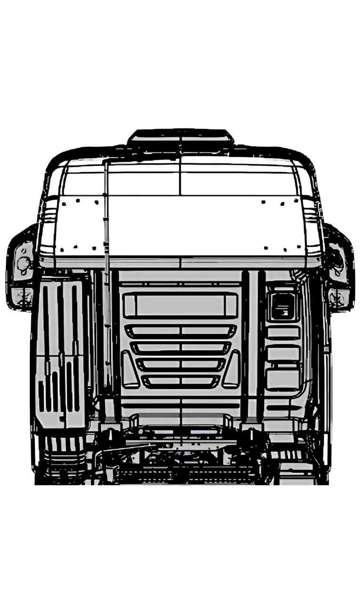

<div class="content">
  <ion-label class="title">Selecione, se houver, pontos de infiltração nos tampões do teto posterior.</ion-label>
  <div class="test">
    <div class="image-container">
      
      <ion-button [class.selected]="selected18" class="rounded" style="top: 27%; left: 17%;"
        (click)="select(0)">18</ion-button>
      <ion-button [class.selected]="selected19" class="rounded" style="top: 27%; left: 70%;"
        (click)="select(1)">19</ion-button>
      <ion-button [class.selected]="selected20" class="rounded" style="top: 35%; left: 17%;"
        (click)="select(2)">20</ion-button>
      <ion-button [class.selected]="selected21" class="rounded" style="top: 35%; left: 72%;"
        (click)="select(3)">21</ion-button>
    </div>
  </div>
    <ion-button id="finish-upside-test-button" (click)="finishTest()">Finalizar teste</ion-button>
</div>
